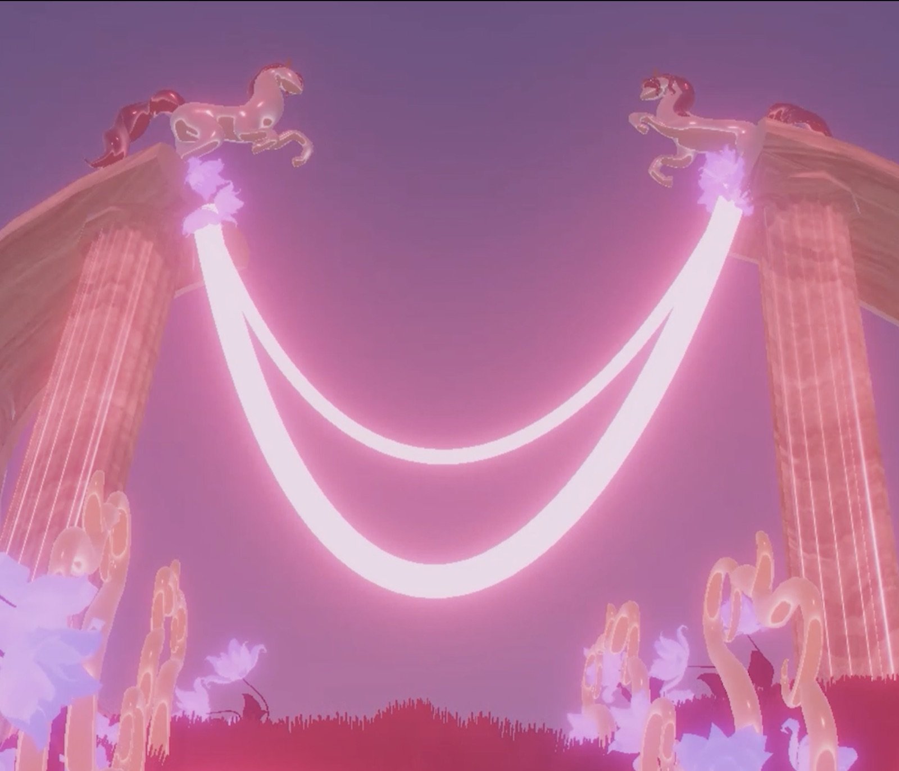
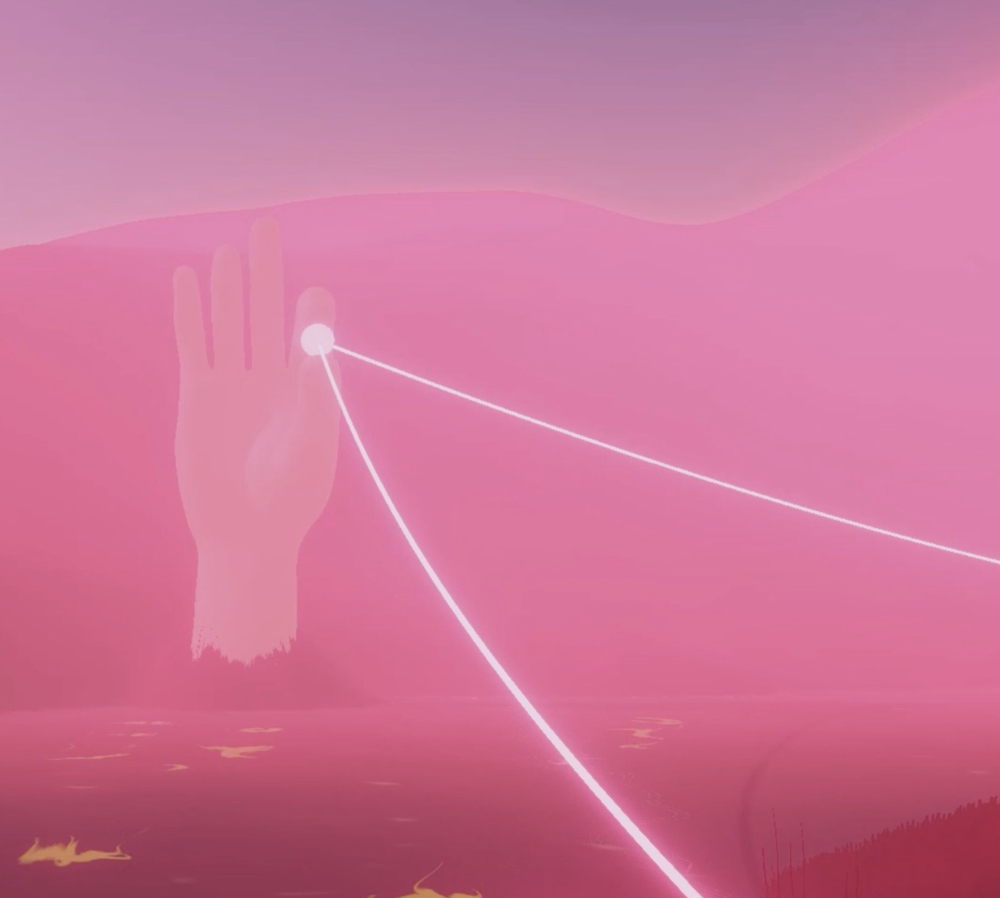
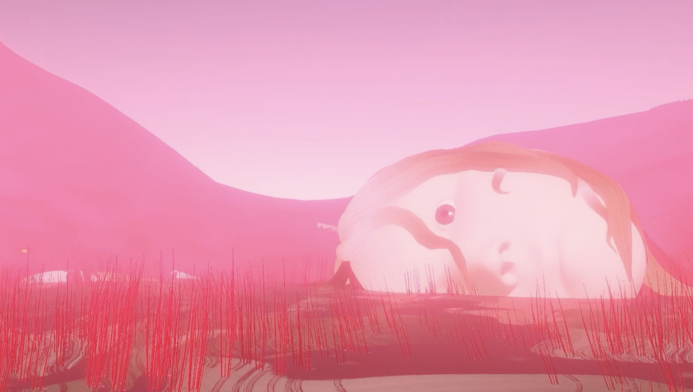
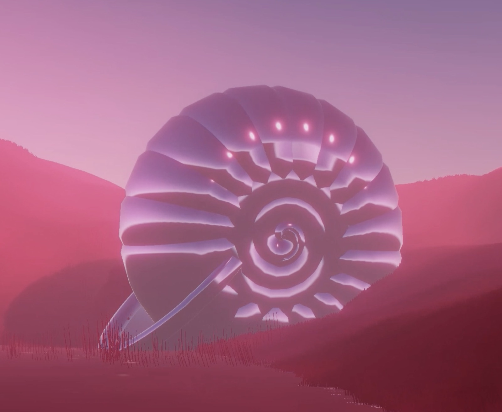

Virtual Wandering
- Year
- 2026
- Role
- World design & development
- Tools
- Unity, Cinema 4D, vibe coding with ChatGPT and Claude
The Idea
This project was made for a virtual wandering course, where the brief was to choose a song and build a world the viewer could wander through, shaped by the feeling the song gives. I chose “Gam HaYam Nasog” (Even the Sea Retreats) by Evyatar Banai and Efrat Ben Tzur. I knew right away what feeling I wanted to carry: femininity and dreaminess. What I didn’t have was a story, and that absence followed me through the whole process. The path I built was linear, but a user moving through it wasn’t always sure where to go next.
Process
I built the world’s atmosphere around a set of deliberate choices: a pinkish palette, organic shapes, dusk-like lighting, and a bloom filter that pushed everything a little further into a dream. The elements themselves were modeled in Cinema 4D, while the ground, grass and water were built as a living system in Unity. Some of the Cinema 4D elements, especially the trees, looked too static once they were in the scene, so I used Claude to write code that moved them using their own maps and topology, rather than animating them by hand.
Midway through the project I realized the world conveyed a feeling but told no story. To give the wanderer something to follow, I introduced a human presence that reveals itself gradually along the path: legs appear first, then hands, then a head. The intention was to build curiosity scene by scene, rather than relying on a plot. By the end of the path, the head faces a glowing pearl inside a shell, a closing image I still think of as open rather than resolved.




Decisions
The color palette was chosen specifically to carry the feeling of the song, since there was no narrative to lean on instead. The organic elements were chosen to build a consistent, dreamlike aesthetic across the world. The fragmented human body parts were chosen deliberately to create a sense of mystery, standing in for the story the piece doesn’t otherwise tell. And the workflow itself was split by tool on purpose: static elements in Cinema 4D, the living systems of ground, grass and water in Unity, and any motion that needed intelligence, like the trees responding to their own topology, handled through AI-assisted code.
What I’d Do Differently
The ending remains the piece’s open question. Both my instructor and the guests who experienced the wander found it confusing, and I agree with them. If I returned to this project, I’d look for a way to close the experience rather than leave it open, for instance by letting the wanderer enter a different space at the end and see what the figure went through, so the piece resolves into a feeling of completion instead of a question mark.
Credits
World design & development - Adel Fitoussi
Song - “Gam HaYam Nasog”, Evyatar Banai & Efrat Ben Tzur
Instructor - Eran Hilleli
Bezalel, 2026